A compact Switzerland holiday with only four hotels, so you unpack and settle in. Three nights on the Swiss Riviera at Montreux for Chillon Castle, the Rochers de Naye and the Lavaux vineyards, the GoldenPass Express to Interlaken, four nights in the Jungfrau region for the Top of Europe, Lauterbrunnen, Mürren and Grindelwald First, four nights in Lucerne for Pilatus, Rigi and the Transport Museum, and a last night in Zurich. Everything is on public transport with one Swiss Travel Pass, and each day has a rest window for children.
See it for yourself
Photos from the journey

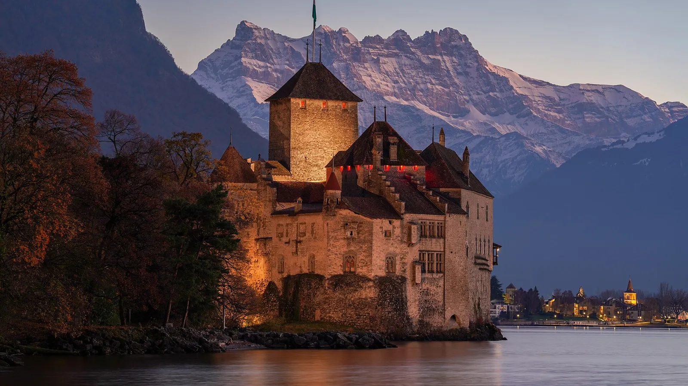
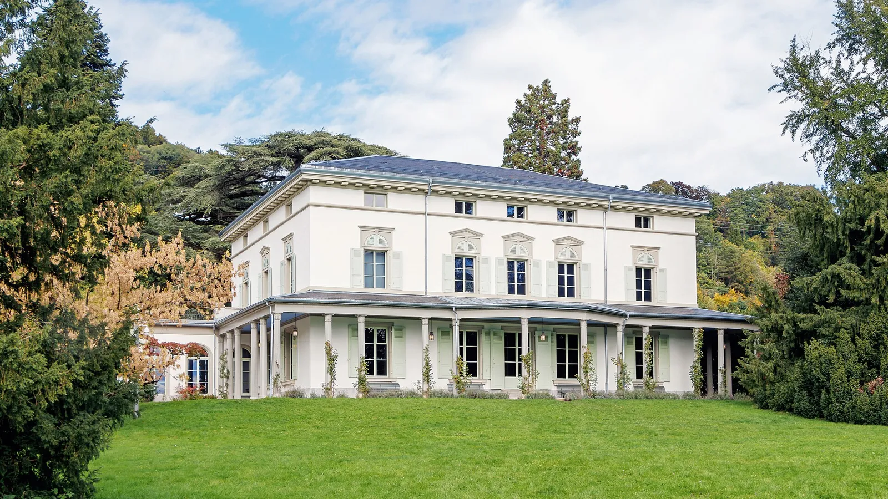
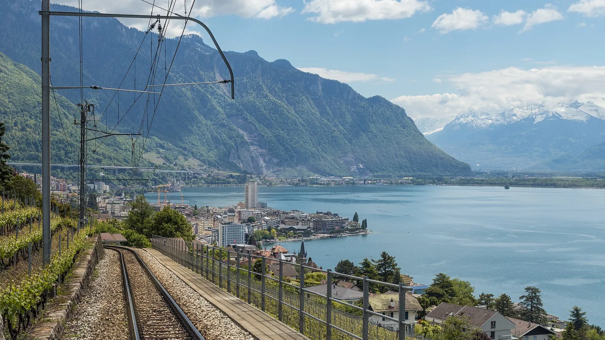

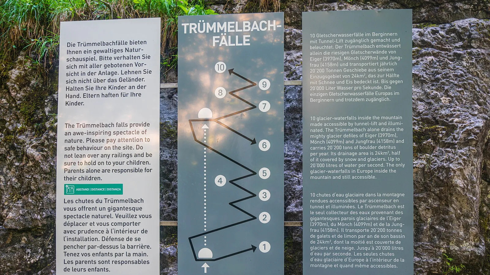
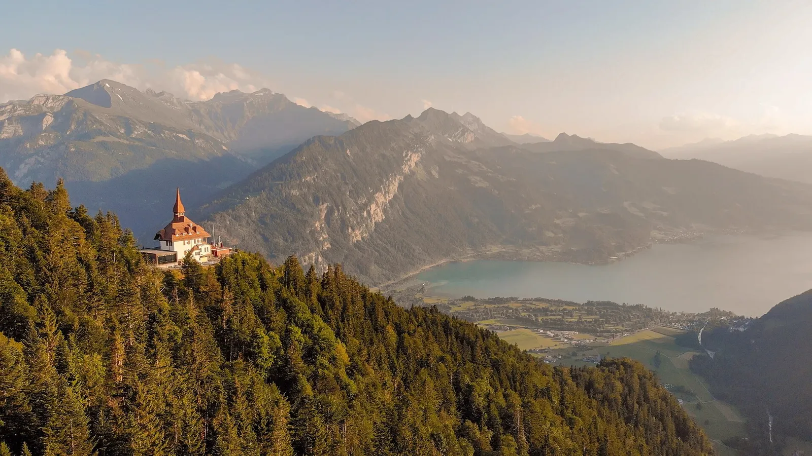
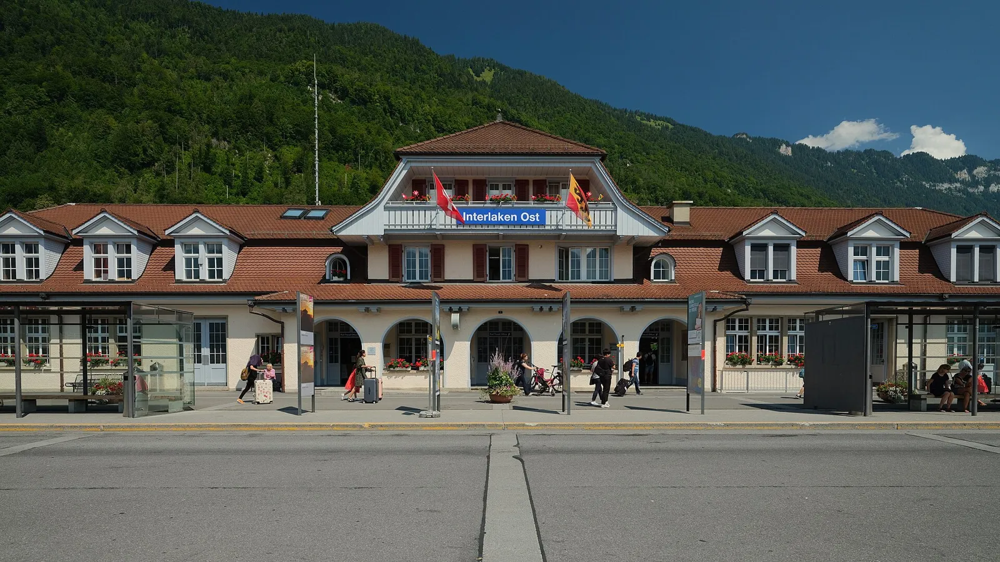
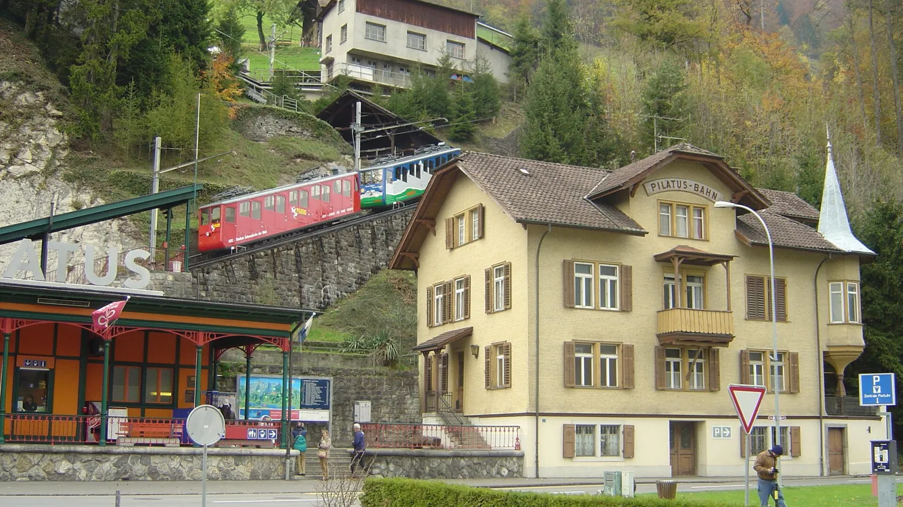
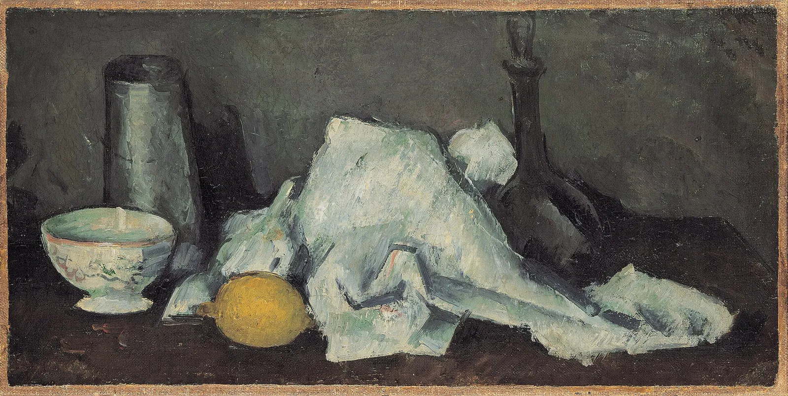
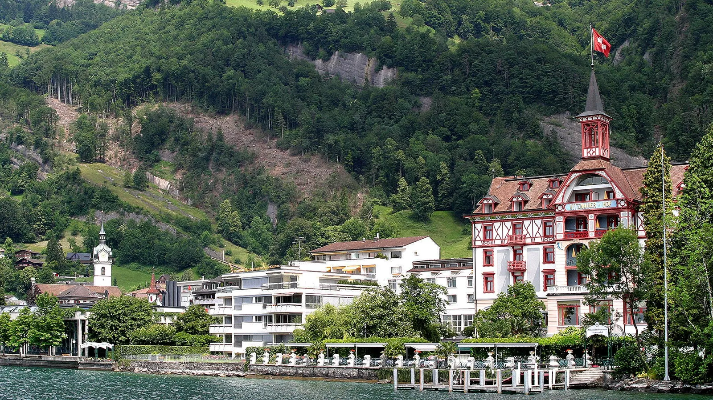

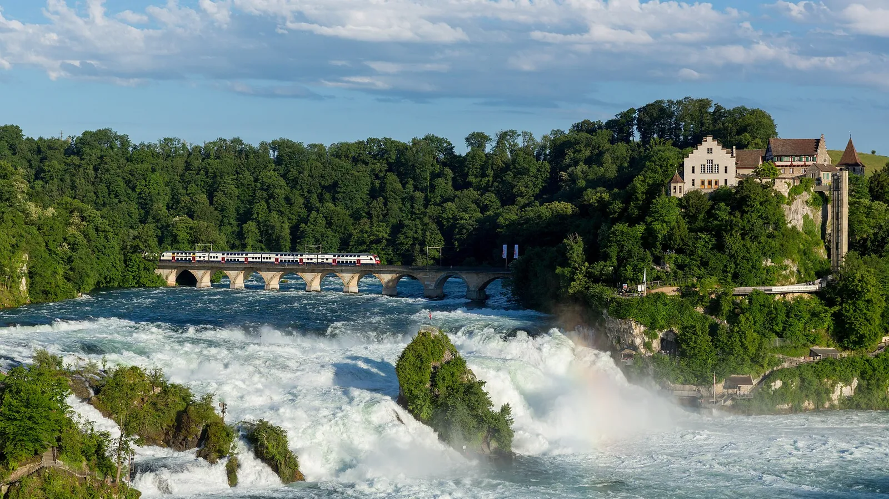
Where you go
The journey on one map
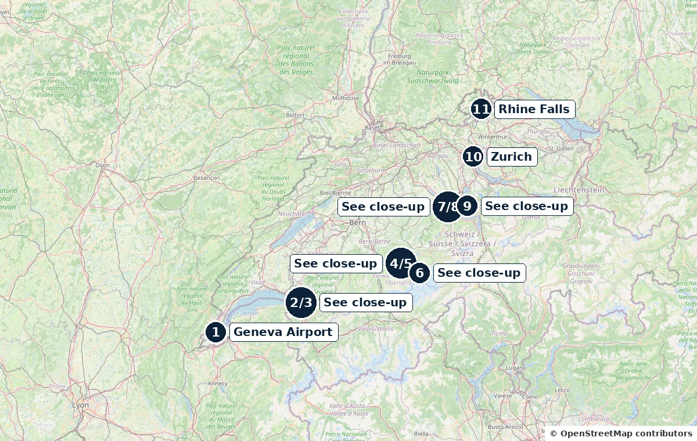
Geneva AirportMontreuxVeveyInterlakenLauterbrunnenGrindelwaldLucernePilatusRigiZurichRhine Falls
Day by day, in short
Daily travel brief
Distances are by road for the whole day. The full plan with timings comes with your detailed itinerary.
-
1
Arrive on the Swiss Riviera
Montreux Freddie Mercury Statue
- Train to Montreux: ask the hotel 48 hours ahead for early check-in.
- Fondue and raclette are vegetarian; ask for the cheese without wine for children.
-
2
Château de Chillon and Rochers de Naye
- Château de Chillon: book timed tickets online.
- Rack railway to Rochers de Naye: about 8°C at the summit; take jackets.
-
3
-
4
GoldenPass Express to Interlaken
- GoldenPass Express: seat reservations are compulsory and sell out in summer.
- Check jungfrau.ch tonight for tomorrow's summit forecast.
-
5
Jungfraujoch, Top of Europe
- Move slowly at altitude and watch children for dizziness or headache.
- Can be minus 5°C: four layers, hat, gloves and SPF 50.
- Kleine Scheidegg on the way down: seat reservations are compulsory; the last train down is about 16:20.
-
6
Lauterbrunnen, Trümmelbach Falls and Mürren
- Trümmelbach Falls: spray soaks you; bring a rain jacket.
- Trümmelbach is open from about April to early November.
-
7
Harder Kulm and Grindelwald First
- Bachalpsee walk: trainers with grip; the path is gravel.
- Option: the Glacier Gorge in Grindelwald, a 45-minute walk through a narrow ravine.
-
8
Lucerne-Interlaken Express to Lucerne
- Check pilatus.ch tonight for the summit status.
-
9
Pilatus Golden Round Trip
- Cogwheel railway to Pilatus Kulm: the cogwheel railway runs from about May to November.
- If the summit is in cloud, swap with tomorrow's museum day.
-
10
Lucerne museums and the old town
- Swiss Museum of Transport: book the chocolate ride time slot with your museum ticket.
- Lucerne's old confectioners sell truffles made to recipes from the 1890s.
-
11
Lake Lucerne and Mount Rigi
- Rigi is gentler and warmer than Pilatus: an easy last mountain.
-
12
-
13
Rhine Falls or fly home
- Train to Zurich Airport: be at the airport 3 hours before an international flight.
- Chocolate and cheese go in checked baggage.
Local know-how
Travel hacks from our desk
Hotel deposit
Use a credit card for the deposit or pre-authorisation at check-in, never a forex or debit card. Forex cards cannot hold funds, many hotels refuse them, and a credit-card hold is released faster.
Cards and cash
On card machines, always choose to pay in Swiss francs (CHF), never in INR. Cards and phone payments work almost everywhere. Carry about CHF 50 for kiosks and mountain toilets.
Pickpockets
Busy stations, trams and squares are pickpocket hotspots. Keep passports in the hotel safe, carry a copy, and wear your bag in front in crowds.
Plugs, water and meal times
Plugs are the two round-pin type C and F at 230 volts (Switzerland uses type J; a type C plug fits). Tap water is safe to drink. Lunch is about 12:00 to 14:00 and dinner from about 18:30.
Swiss Travel Pass
One pass covers trains, buses, trams and lake steamers, with 25 to 50% off most mountain railways. Children under 16 travel free with a parent on the free Swiss Family Card.
Summit weather
Mountain webcams and summit status are posted by about 06:00. Swap a mountain day for a museum day if the top is in cloud.
When to go
Best time to visit for this journey
Early June or early September.
June to September. Early September, as in the original plan, has settled weather and fewer crowds.
The package
What's included
Included
- 12 nights with breakfast
- Swiss Travel Pass and Swiss Family Card
- GoldenPass Express and Jungfraujoch seat reservations
- 24/7 support from Blue Diamond Voyage
Not included
- International flights
- Schengen visa
- Mountain excursion supplements beyond the pass discount
- Museum entries
- Lunches and dinners
- Travel insurance
- City taxes
The detailed itinerary
Some journeys are planned. Ours are crafted.
The full 13-day plan is ready: hour-by-hour timings, drive times, temple dress codes, food for your diet and a route map for every day. Tell us your dates and your city, and we'll send it to you on WhatsApp, shaped around you.
- Hour-by-hour timings
- A route map for every day
- Hotel and room details
- Visa and entry steps
- Vegetarian and Jain dining
24/7 travel desk+91 97148 59797+91 98242 21400
Photo and map credits
- Geneva Airport: Schutz, CC BY-SA 3.0, via Wikimedia Commons
- Château de Chillon: Giles Laurent, CC BY-SA 4.0, via Wikimedia Commons
- Chaplin's World: Llez, CC BY-SA 3.0, via Wikimedia Commons
- Montreux: JoachimKohler-HB, CC BY-SA 4.0, via Wikimedia Commons
- Jungfraujoch: Ank Kumar, CC BY-SA 4.0, via Wikimedia Commons
- Trümmelbach Falls: PantaRhei, CC BY-SA 4.0, via Wikimedia Commons
- Harder Kulm: Giles Laurent, CC BY-SA 4.0, via Wikimedia Commons
- Interlaken Ost: [Tycho] talk, CC BY 3.0, via Wikimedia Commons
- Alpnachstad: Christian Horcel from Miami, FL, USA, CC BY 2.0, via Wikimedia Commons
- Rosengart Collection: Paul Cézanne, Public domain, via Wikimedia Commons
- Vitznau: W. Bulach, CC BY-SA 4.0, via Wikimedia Commons
- Zurich HB: Dietmar Rabich, CC BY-SA 4.0, via Wikimedia Commons
- Rhine Falls: Kabelleger / David Gubler, CC BY-SA 4.0, via Wikimedia Commons
- Maps: © OpenStreetMap contributors; road routes by OSRM.